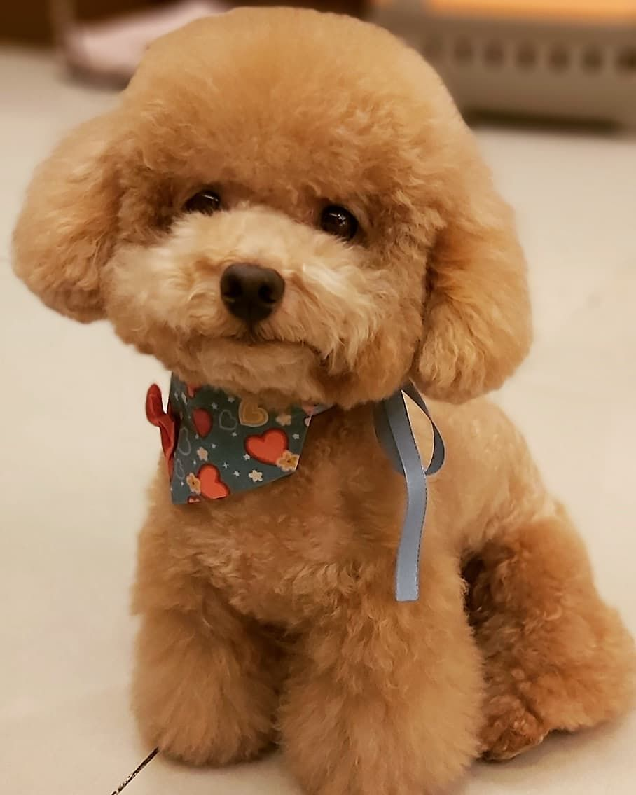

法國貴賓犬
外表
貴賓犬有多種毛色，黑、灰、白、黃等。其毛為單層捲毛，不易脫毛，但其脫下的毛髮易與周遭毛髮糾結而不易直接落下，因此被認為較不會使人類造成過敏，然而貴賓犬如無適當照顧，毛髮就會糾結成團。
性格
貴賓犬的性格整體來說是非常開朗聰明的。它有著很高的智商，在犬類智商排名中位居第二。貴賓犬開朗豁達的個性，讓它更容易與人類接近，更容易與人友好的相處。
歷史
貴賓犬有多種毛色，最初起源於德國，名字來自德語「Pudelhund」，在法國繁育紮根。1936年FCI將法國確認為該品種犬的誕生地。最初該犬種屬於水獵犬的一種，後來由於在路易十四時期被貴族婦女飼養，而改名為貴賓犬（貴婦犬）。
飼養注意事項
怕孤獨，需要毛爸媽用愛陪伴生活
耳垢多，要勤加清潔耳部
幼犬時期容易前肢骨折，需避免跳躍動作；老年時要特別注意後膝十字韌帶易位
皮膚敏感，容易有皮膚病
因血統遺傳疾病，成年後容易罹患股骨頭缺血性壞死症
